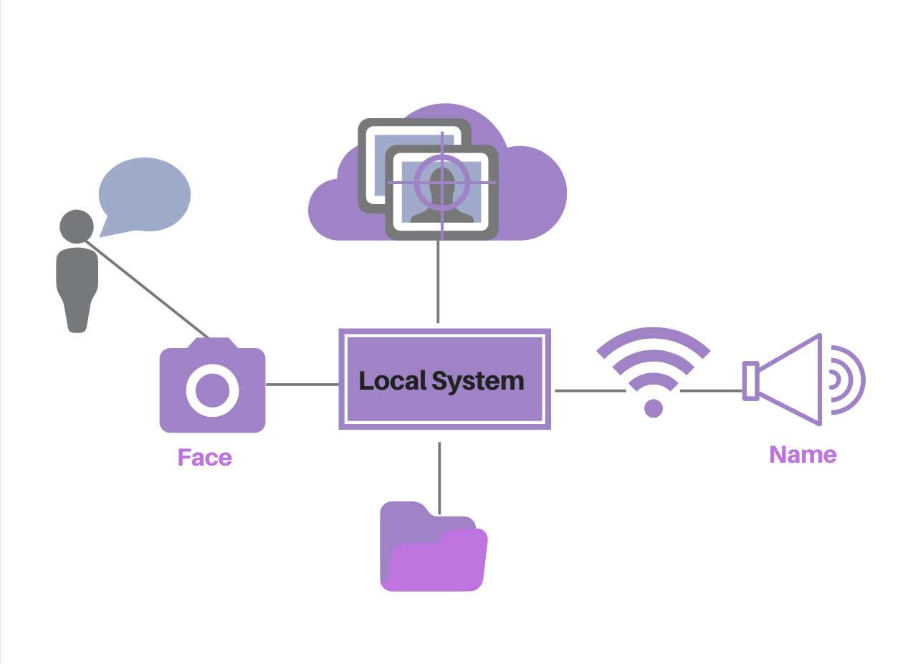
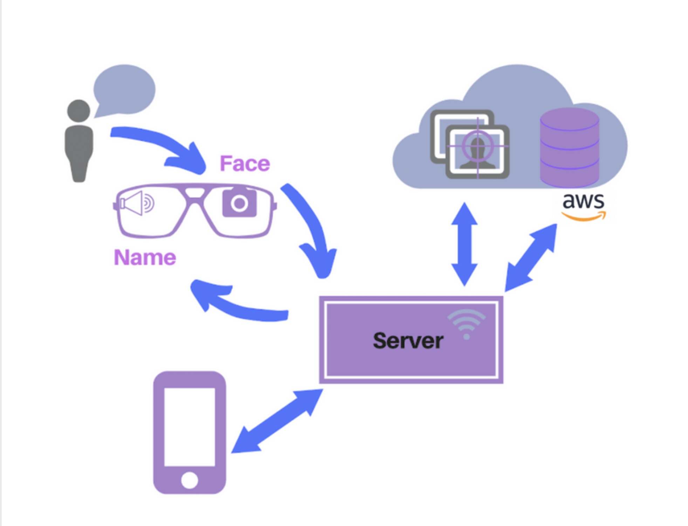

Memento
Memento is a wearable face reminder assistant that helps people with visual and memory-related disorders recognize others.
SKILLS
Raspberry Pi W Zero, Face++, Google Glass, Kairos
PROJECT
EECS 338: Practicum in Intelligent Information Systems Course Project, Resident Team at The Garage Northwestern
TEAMMATES
Andrew Acomb, Daniel Chang, Birthe Ong Cheng, Bryan Li, Diana Smith, Qianhui Sun
TIMELINE
24 weeks (Two-quarter project)
The Memento system evolved over two main iterations with the inital prototype using the Raspberry Pi W Zero and Face++ face recognition platform and the second iteration built on the Google Glass and Kairos face recognition platform.
Iteration 1:
Memento uses a Raspberry Pi W Zero for its wireless capabilities and small portable camera that allows it to be more discreetly placed on a hat. By employing a pre-trainable face recognition API, Face++, Memento can train and update models based on faces it has seen and new faces. After the device correctly recognizes a face, it will communicate the associated name as a verbal reminder to the user through a server and bluetooth speaker. The following steps provide a more in depth description of the technical implementation.
Training Models With Face++ API
A training database was constructed and stored locally. An image distributor then fetches the training images and distributes them by name in a hierarchical order which can be trained by Memento. When the training data is prepared, Memento interacts with Face++ and assigns a unique face_token and user_id for each image before feeding all the tokens of training images into a faceset. Face++ then trains the faceset as a model.
Taking Photos With Raspberry Pi
After setting up the software and components on the Raspberry Pi W Zero, a script in conjunction with a crontab is created that contains a raspistill command to continuously capture images every 3 seconds and save them to a local folder.Images are also processed to be 640 x 480 and vertically flipped before being passed to Face++ to improve recognition accuracy by adjusting for file sizes and camera orientation.
Recognizing Faces in Images
The system will then get the newest images captured by the Raspberry Pi camera from a designated path and feed it to the trained model on the Face++ server to recognize the face(s) in the image. The trained model will return several most similar faces’ tokens and their confidences. Memento can then determine the name of the face (or new face) in the detected image.
Outputting Names to the Speaker via a Web Server
Once the Face++ API returns the correct name for a test image, the codes in Raspberry Pi will post the name to a web server. The server is deployed solely for processing people’s names, and saves the most recently recognized name. Afterwards, a Python script will fetch the name of the person saved in the server and speak it out using Text to Speech.
Updating the Model if a New Face is Detected
Finally, if a new face is detected, Memento will update the trained model by adding a new category to it. Specifically, Memento will ask the Raspberry Pi camera to take a certain number of images (5 in our demo) of that new face in a short period of time. After assigning a face_token and user_id to each new face, Memento will upload these face images to Face++ to retain the model.
Iteration 2:
Memento's second iteration focuses on upgrading the system hardware to Google Glass as the wearable technology that captures photos and interfaces with the Kairos Face Recognition Platform. Rather than store the database locally, the second iteration involved connecting to an Amazon EC2 instance to host code and store images. Additional preliminary research and prototyping helped inform the ethical implications of using face recognition technology in the Memento system.
User Prompted Image Capture
The user prompts the Google Glass to take a picture by tapping the side of the frame. This gives the user more control over when images are taken and sent for processing rather than taking images at intervals and performing ongoing face detection.
Face Recognition with Kairos
The captured image is sent to the server for processing and recogniton via the Kairos platform. Once Kairos recognizes the face in the image above a confidence threshold, it returns a name string to the Google Glass.
Discreet Audio Output
The Google Glass receives the name string and outputs it to the wearer via text to speech through its bone conduction audio output. This feature means that only the user can hear the name audio compared to using a speaker in iteration 1.